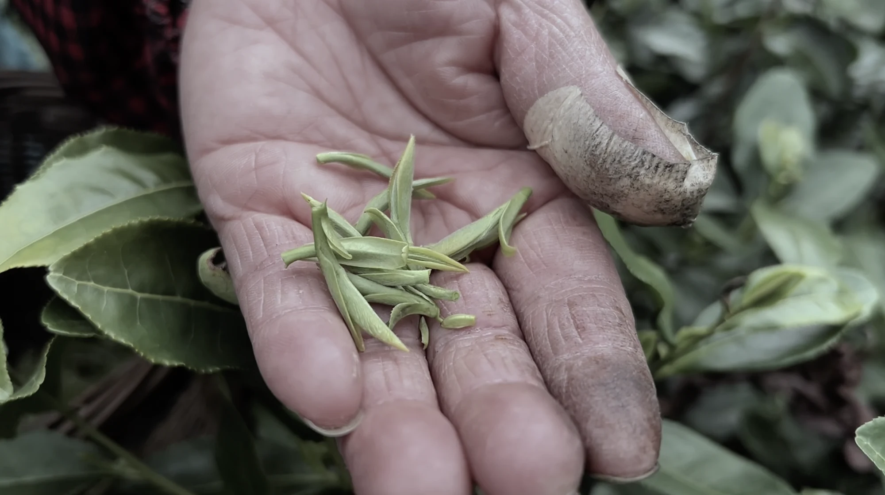
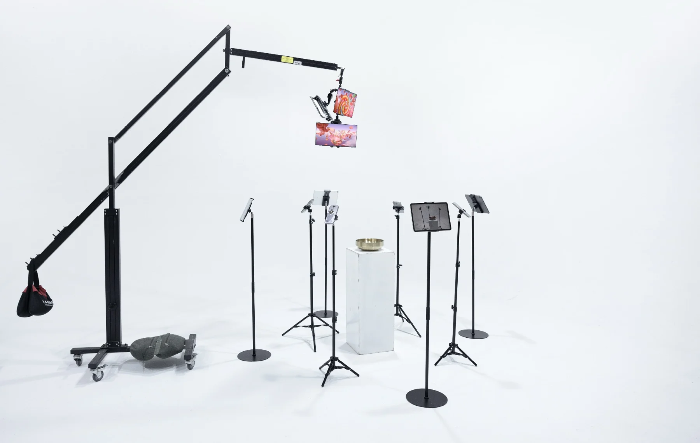
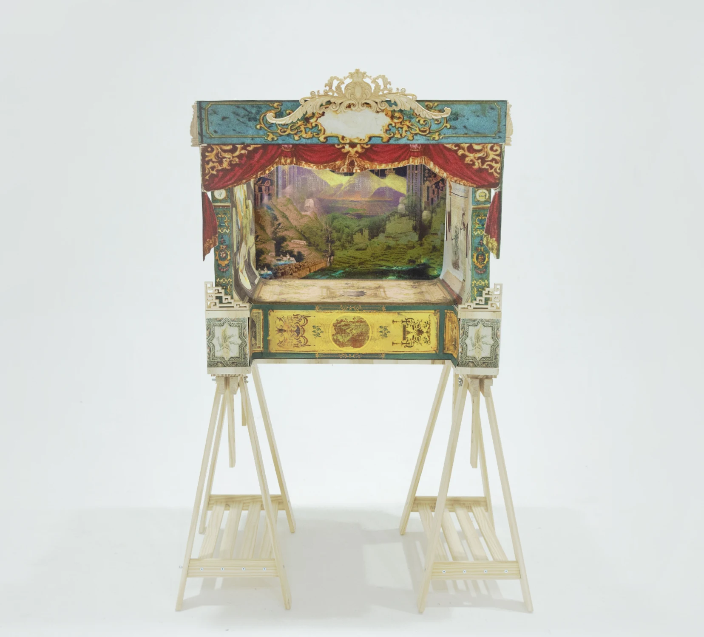

Living in Repetition
季节性劳动中女性采茶工的自我价值与韧性

VISUAL & CROSS-MEDIA DESIGN
我是董盈盈，毕业于皇家艺术学院信息体验设计专业。我的创作从访谈、档案与图像研究出发，关注文化记忆、劳动经验和数字观看，并通过影像、平面与参与式装置展开表达。
关于我的创作 ↗季节性劳动中女性采茶工的自我价值与韧性
 探索项目 ↗
探索项目 ↗红茶全球化的物质路径与文化想象
 探索项目 ↗
探索项目 ↗当历史被重新讲述，图像留下怎样的矛盾。

探索项目 ↗我们看见食物，也在消费图像。

探索项目 ↗同一组图像，可以演出多少种茶的故事。
RESEARCH → NARRATIVE → EXPERIENCE